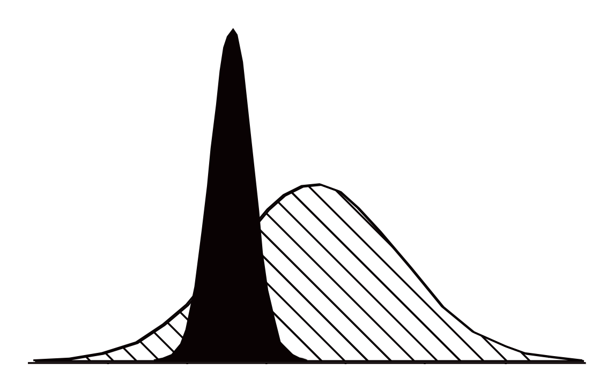
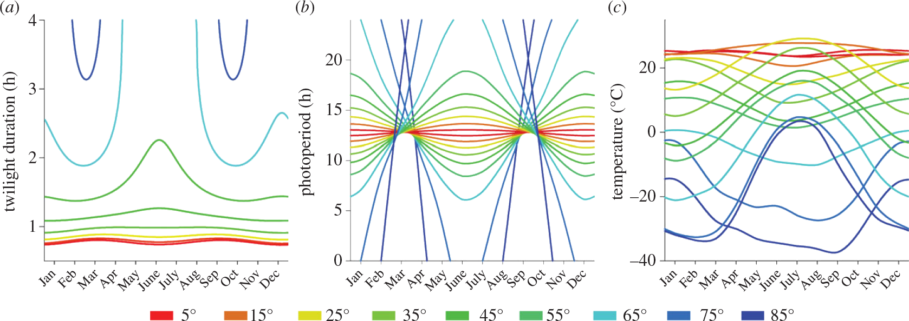
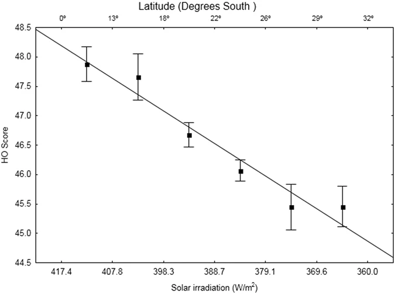

4 On the latitude hypothesis
Although many theories related to sleep and circadian rhythms are well-established in science, it is still necessary to verify and test them in larger samples to obtain a more accurate picture of the mechanisms related to the ecology of sleep and chronotypes. This project undertakes this commitment with the aim of investigating a hypothesis that is still relatively untested but widely accepted in chronobiology, which suggests that latitude is associated with the regulation of circadian rhythms (Hut et al., 2013; Leocadio-Miguel et al., 2014, 2017; Pittendrigh et al., 1991; Randler, 2008; Randler & Rahafar, 2017; Roenneberg et al., 2003).
The latitude hypothesis is based on the idea that regions located at latitudes close to the poles, on average, experience less annual sunlight exposure compared to regions near the equator. Therefore, it is deduced that regions near latitude 0° have a stronger solar zeitgeber, which, according to chronobiology theories, should lead to a greater propensity for the synchronization of circadian rhythms in these populations with the light-dark cycle. This would reduce the amplitude and diversity of circadian phenotypes found due to a lower influence of individuals’ characteristic endogenous periods (Figure 4.1 illustrates this effect). This would also give these populations a morningness characteristic when compared to populations living farther from the equator, where the opposite would occur – greater amplitude and diversity of circadian phenotypes and an eveningness characteristic compared to populations living near latitude 0° (Roenneberg et al., 2003).

Source: Adapted from Roenneberg et al. (2003).

Source: Reproduction from Hut et al. (2013).

Source: Reproduction from Leocadio-Miguel et al. (2017).
“This last fact contradicts the otherwise plausible interpretation of our data that strength of Zeitgeber (and hence precision) is greatest when the light/dark ratio is 1:1. The strength of the Zeitgeber certainly depends on the light/dark ratio [5] and it may be expected to influence precision, too. However, unexplained additional factors must complicate the picture. It is unknown whether the fluctuations in precision have an ecological significance.” (Aschoff et al., 1972)
“Latitude and longitude are key factors that influence how light–dark cycle interacts with the circadian rhythm of humans. Therefore, it is reasonable to assume that chronotype distribution of a population may vary as a result of different geographical location.” (Leocadio-Miguel et al., 2014)
“However, it is also our experience that some mathematically sophisticated scientists may lack the conceptual frame that links the mathematical procedures to the substantive scientific task in a particular case” (Cohen et al., 2002).
Effect sizes. Statistical ritual versus statistical thinking (Gigerenzer, 2004).
A p-value is not evidence of the existence of an effect., it’s only indirect evidence at best. Large samples and the p-value problem (Lin et al., 2013). P-values as an exponential model of data sizes (Gómez-de-Mariscal et al., 2021). A small p-value does not imply that there is an important effect; it only tells us something about the plausibility of the effect. You need to have a meaningful effect to have an interesting result, and the p-value doesn’t tell you that.
Confidence intervals for an effect size measure in multiple linear regression (Algina et al., 2007). Setting hypotheses with effect sizes: minimal effect size (Perezgonzalez, 2015).
The original article had two issues regarding data testing, commonly related to null hypothesis significance tests (NHST). It is not within the scope of this article to discuss all the issues regarding NHST; for that, I recommend checking Perezgonzalez (2015). The two main methodological issues regarding the hypothesis test in the original article were:
- Using the p-value instead of the effect size as a criterion for rejecting or accepting the alternative hypothesis;
- Failing to integrate a minimum effect size in the alternative hypothesis. A test without the latter can create serious distortions in the interpretation of the results, since even a negligible effect could lead to the acceptance of the alternative hypothesis.
Considering the particular emphasis that the solar zeitgeber has on the entrainment of biological rhythms (as demonstrated in many experiments), it would not be reasonable to assume that the latitude hypothesis could be supported without at least a non-negligible effect size. Although the latitude association claimed by many authors implies not just a linear relationship but also a significant effect on chronotype, considering the biological construct of chronotype, the approach that incorporates a minimum effect size (MES) is not new. In fact, when Neyman and Pearson published their schema for data testing, a MES was required.
Even assuming a very low threshold, similar to the claim of 2% variance explained by latitude as a predictor, the hypothesis does not hold. As shown by Leocadio-Miguel et al. (2017), adding \(0.00388\) to the \(\text{R}^2\) results in Cohen’s \(f^2 = (0.06352 - 0.05964) / (1 - 0.06352) = 0.004143174\), which is negligible by all standards. Again, the conclusion drawn by the authors of this study was not based on sound statistical thinking.
y-axis illusion. unbalanced data. Horner & Östberg scale from 16-86.
Solar irradiation used as a proxy for latitude.